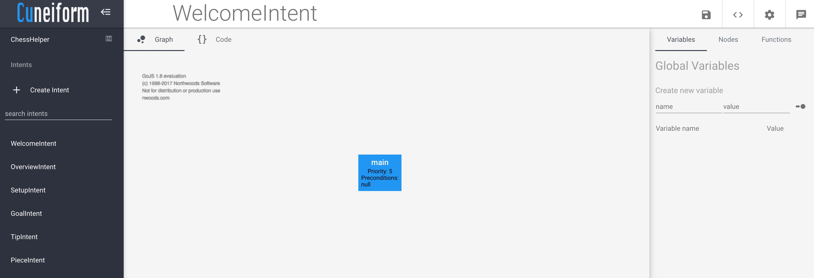
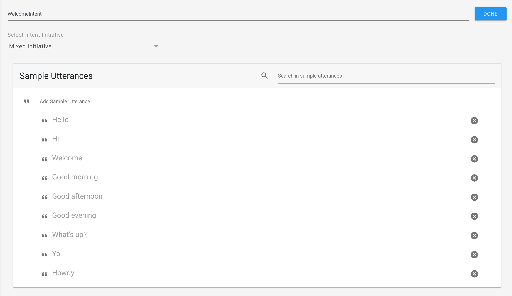
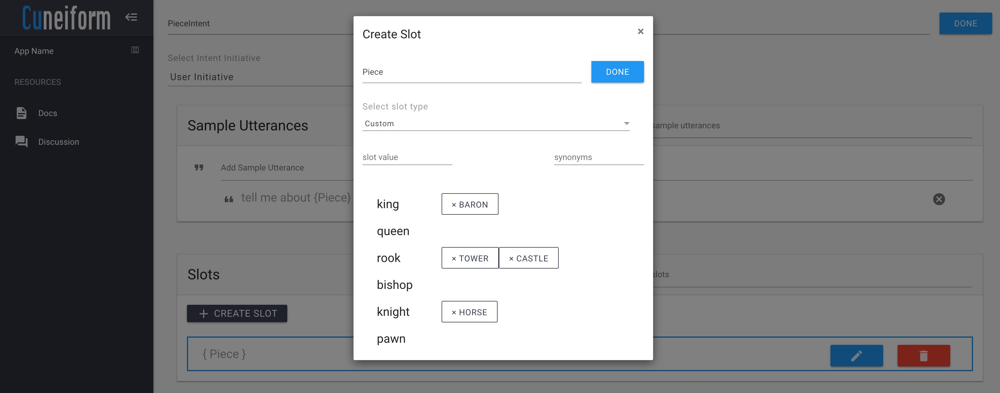
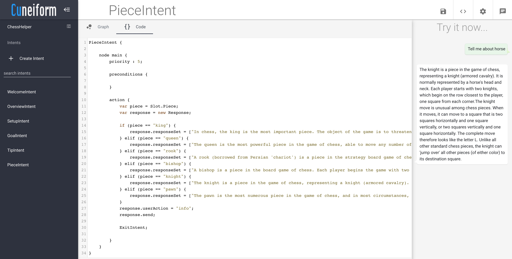

Address already in use error
If the following error OSError: [Errno 48] Address already in use occurs,
Search for the following processes and kill them.
ps aux | grep start.py
ps aux | grep classifier.py
ps aux | grep dialog_manager.py
kill -9 <pid>
This chapter provides a quick understanding into how to run a Cuneiform application. For this purpose, we will use the ChessHelper sample.
ChessHelper is a sample conversational application which provides us with basic information about chess in natural language. This sample identifies our intentions from what we type and provide us with information relevant to what we requested.
Before you begin, Cuneiform is supported for systems fulfilling the following requirements.
Clone the cuneiform project repository from GitHub.
git clone https://github.com/Savidude/cuneiform.git
Navigate to the bin directory in the project and run the install.sh script.
cd cuneiform/bin
./install.sh
Run Cuneiform.
./start.sh
If the following error OSError: [Errno 48] Address already in use occurs,
Search for the following processes and kill them.
ps aux | grep start.py
ps aux | grep classifier.py
ps aux | grep dialog_manager.py
kill -9 <pid>
Access the Cuneiform development environment by navigating to http://<HTTP_HOST>:<HTTP_PORT>
On opening the application, you are presented with the following interface.
More information on making your way through the Cuneiform development environment can be found in the tutorials. In this chapter, we will give you a brief introduction to the different components of the environment.
On the left is the list of intents in the project. An intent represents an action that fulfills a user's request provided in natural language. For example, WelcomeIntent highlights the set of actions that is executed when the user greets the system. Details on how to initiate this intent can be viewed by clicking the icon in the navigation view on the top right side of the environment.
Shown above is the set of details on how the WelcomeIntent could be initiated. This can be done with simple greetings like "Hello". Let's see what would happen when we greet our ChessHelper.
When we greet ChessHelper by saying "Hello", it responds with "Welcome to ChessHelper. You can ask...". The program for this response can be seen by either clicking on the Code tab at the top.
WelcomeIntent {
node main {
priority : 5;
preconditions {
}
action {
var response = new Response;
response.responseSet = [
"Welcome to ChessHelper. You can ask how to set up the game, about an individual piece, what the rules are, how to win, or for a chess tip. Which will it be?"
];
response.userAction = "info";
response.send;
ExitIntent;
}
}
}
The program code for WelcomeIntent is shown above. The other intents are written similar to WelcomeIntent. However,if we check the intent properties of PieceIntent, there is a slot value called "Piece", which is represented by { Piece }.
When the edit button () is clicked, more details of the Piece slot can be seen.
The slot contains values such as "king", "queen", etc. Additionally, some slot values may also contain synonyms. For example, a person may refer to "rook" as "tower", or "castle".
The user may provide the name of the piece along with an utterance, similar to "Tell me about {Piece}", where the piece's name, or a synonym is to be used in place of {Piece}. An example for this can be seen in the emulator shown below, where we ask ChessHelper to tell us about the knight. However, instead of saying "knight", we use "horse".
Explore the rest of the intents, their properties, and source code and check how ChessHelper behaves when different types of inputs are given in the Try it Emulator. Try using different inputs, which are similar, but not provided in the sample utterances, and check if the program behaves as expected.
ChessHelper is a simple application designed to demonstrate basic conversational capabilities of Cuneiform. To learn more about Cuneiform, and its wide array of functionalities, explore more samples, or read our documentation.